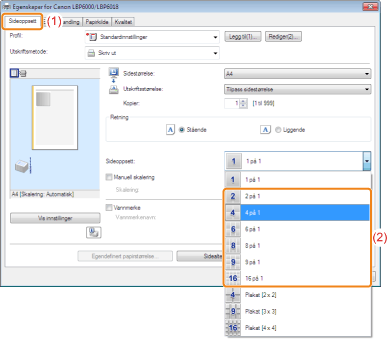
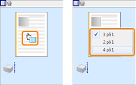
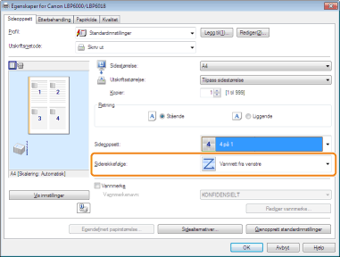

Du kan skrive ut flere sider på ett ark.
Dette er en utskriftsmetode som er referert til som intensiv utskrift eller N-page-utskrift.

|
VIKTIG
|
|
Om programvarefunksjonen for å skrive ut et dokument som et sortert sett med kopier
Noen programmer gir en funksjon for å skrive ut et dokument som et sortert sett med kopier. Ikke bruk denne funksjonen ved utskrift av flere sider på ett ark. Det kan være at dokumentet ikke skrives ut skikkelig.
|
1
Vis innstillingsskjermen til skriverdriveren.
2
Spesifiser innstillingen for [Sideoppsett].
|
(1)
|
Vis kategorien [Sideoppsett].
|
|
(2)
|
Velg antall sider som skal skrives ut på ett ark.
|

 Hvis du ikke kan spesifisere innstillingen Hvis du ikke kan spesifisere innstillingen |
 "
"|
MERK
|
|
Bruke forhåndsvisning for å spesifisere innstillingen
Du kan også spesifisere et sideoppsett ved å venstreklikke gjentatte ganger innenfor dokumentbildet eller høyreklikke på forhåndsvisning når [
 ] er valgt. ] er valgt.
|
3
Spesifiser oppsettet til siderekkefølgen på papiret.

4
Klikk på [OK].
 |
For detaljer om den grunnleggende utskriftsprosedyren, se "Grunnleggende utskriftsprosedyre".
|